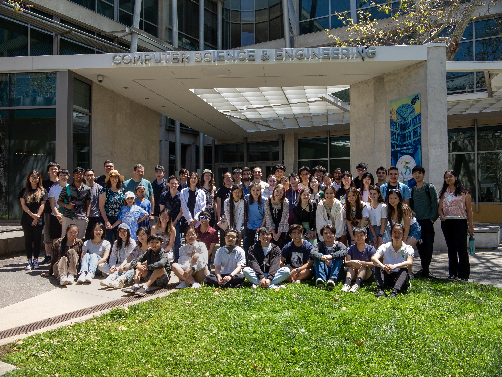

Resume
Experience
VIEW RESUME
Software Engineer Intern @ Bloomberg
Summer 2024
Designed, implemented, and tested a web application via C++ and TypeScript to perform mass updates directly thru the Bloomberg Terminal without engineering involvement. Developed web services, a SQL-based database schema, and an intuitive front-end interface.

Software Engineer Intern @ Splunk
Summer 2023
Streamlined Splunk’s testing process by automating steps to enter debug sessions and providing rapid access to diagnostic test tools via tmux, bash, and Python. Enhanced developer experience by providing a centralized, intuitive resource to navigate and initiate debug sessions effectively.
Leadership
CSE Tutor
Spring 2023 - Present
I have been a tutor for CSE 12 Basic Data Structures, one of the most foundational CS courses at UC San Diego, for approaching three years. As a tutor, I have supported and guided nearly 2500 students through fostering good coding practices like clean code, debugging skills, and visualizing concepts, helping students build a strong base for their future coursework. Witnessing their progress and receiving positive feedback confirmed that my individualized teaching approach and patience made a meaningful impact.
Eta Kappa Nu (IEEE-HKN)
Fall 2021 - Present

Being part of HKN has defined my UC San Diego experience—I’ve made my closest friends, countless memories, and a real impact on the engineering community. As VP Events and President, I led the post-pandemic transition back to in-person by restoring key events like career fairs and hackathons while rebuilding industry and alumni connections. I also prioritized mentorship and inclusivity within our org, regularly hosting coffee chats and launching a diversity initiative to foster collaboration and improve accessibility.
Education
University of California, San Diego
September 2021 - June 2025
B.S. Computer Science, Minor in Mathematics
GPA: 3.97
Coursework
Linear Algebra, Probability, Statistics, Data Structures, Algorithms, Machine Learning, Operating Systems, Recommender Systems & Web Mining, Database Systems, Parallel Computing, Natural Language Processing, Computer Security
Skills
- Languages
- Java, Python, C, C++, SQL, HTML, TypeScript, Bash, LaTeX
- Software Tools
- Linux/Ubuntu, Git/Gitlab/GitHub, Github Actions CI/CD, GDB, Vim, Android Studio, Jupyter Notebook, JUnit